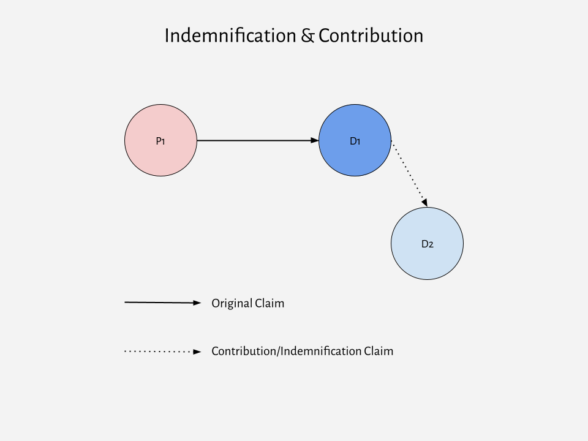

FRCP Rules 13(g) and 14(a) both permit joinder of claims by a party seeking to hold someone else liable for all or part of a claim against them:
[A] crossclaim may include a claim that the coparty is or may be liable to the crossclaimant for all or part of a claim asserted in the action against the crossclaimant.
A defending party may, as third-party plaintiff, serve a summons and complaint on a nonparty who is or may be liable to it for all or part of the claim against it.
These provisions refer to claims for indemnification and contribution. They arise where a party to a suit (D1) seeks to hold someone else (D2) responsible for all (indemnification) or part (contribution) of the amount of a judgment against them in favor of another party (P1).

In this illustration, P1 asserts a claim against D1. D1 then asserts a claim against D2, contending that, if P1 prevails against D1, D2 must cover all or part of D1’s liability to P1.
D2 may already be a party to the lawsuit (i.e. P1 has joined D2 as a co-defendant under Rule 20), in which case D2 would assert a crossclaim for indemnification or contribution under Rule 13(g). Or D2 may not yet be a party, in which case D1 would join D2 as a third-party defendant and assert a claim for indemnification or contribution under Rule 14(a).1
Under the FRCP, neither crossclaims and third-party claims are compulsory. Conseuently, a party with a potential contribution or indemnification claim (whether against a co-party or potential third-party) may opt to wait until the outcome of the suit and then bring the contribution/indemnification claim in a subsequent action.2
Rules 13(g) and 14(a) do not establish a right to indemnification or contribution. That is a matter of substantive law (tort, contract, or statute). These Rules simply govern the procedure for joining such claims where they have some basis in substantive law.
A right to indemnification allows a defending party to recover the full amount of a judgment against them (and sometimes defense costs) from another person. Indemnification originated as a common law right, based on tort and agency law. The common law right has been augmented (or in some jurisdictions replaced) by statutory and contractual rights to indemnification.
Common law indemnification applies where a defendant was not actually at fault, but is liable to the plaintiff for another person’s conduct, based on their legal status or relationship.
Example: At common law, if an employer was held vicariously liable for harm to a third party caused by an employee, the employer could sue the employee for indemnification. In some states, this common law right to indemnification from employees has been abrogated by judicial opinion or statute.
_Example: In some states, if a retailer is subject to strict liability for injuries caused by a defective product it sold, the retailer has a common law right to indemnification by the manufacturer or other party actually responsible for the defect, as long as the retailer was not itself also at fault.
Indemnification statutes may codify the common law right or impose a duty to indemnify where it would not apply under common law.
Example: In some states, an employer has a statutory duty to indemnify an employee for civil liability arising from the employee’s actions in the course of employment. See, e.g., Cal. Labor Code § 2802.
Example: The business corporations statutes in every state include provisions permitting (subject to certain conditions or limits) corporations to indemnify corporate officers and directors (and sometimes other employees and agents) who are sued based on their corporate roles. Some state’s business corporations statutes mandate indemnification of officers and directors who successfully defend against such claims. See, e.g., 8 Del. Code § 145; N.C.G.S. §§ 55-8-51, 55-8-52, & 55-8-56.
Parties may enter into agreements that shift ultimate responsibility for judgments, without regard to which one is at fault.
Example: Many corporations enter into indemnification agreements with corporate officers and directors to provide indemnification for liability arising out of their corporate roles (as authorized by statute).
Example: Manufacturers of consumer products may agree to indemnify distributors or retailers who face product liability suits. Such agreements may provide for indemnification where the common law right to indemnification does not apply or is not recognized at all under state law.
Liability insurance is a common type of contractual indemnification agreement. Such policies typically provide that the insurance carrier will pay (subject to limits and conditions in the policy) the cost of judgments and the cost of defense for claims covered by the policy. If there there is a dispute as to whether the policy covers the insured party’s potential liability, the insured party may join the insurance carrier as a third-party defendant so that the court can resolve the coverage dispute.
A right of contribution allows a joint tortfeasor who pays damages beyond their proportionate share of fault (e.g. under joint and several liability) to seek reimbursement from other joint tortfeasors for their proportionate shares. The right of contribution may be governed by common law or statute. You will learn more about joint & several liability, and contribution among joint tortfeasers, in your Torts class.
While D1’s claim against D2 is substantively the same in either situation, the FRCP uses different terminology depending on how D2 becomes a party. Under Rule 13(g), it is a cross-claim against a co-defendant; under Rule 14(a), it is a third-party claim against a third-party defendant. Understanding that distinction (and using the correct terms) is important, because it has other consequences under the FRCP (i.e. Rule 14 permits joinder of a third-party defendant only to assert a claim for indemnification or contribution, while Rule 13(g) would also permit crossclaims between D1 & D2 for their liability to each other without regard to P1’s underlying claim). ↩
But note that claim or issue preclusion may apply in some cases. ↩